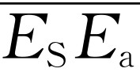

第31章 折射率的起源
§31-1 折射率
我们在前面曾指出，光在水中比在空气中走得慢，而在空气中又略比在真空中走得慢。这一效应用折射率n 来描写。现在我们想了解这一较慢速度是怎么得出来的。特别是想弄明白以前所作的下列几点物理假设或物理陈述之间有什么关系：
（a）在任何物理条件下，总电场总是可以用来自空间所有电荷的场的总和来表示；
（b）来自单个电荷的场总是 由它的以速度c 延迟而算得的加速度值给定（对辐射场来说）。
但对一片玻璃来说，你会想：“哦，不对，你对这些都应加修正。你应该说它以速度c /n 延迟。”然而这是不对的，而且我们就是要了解这为什么不对。
光或任何电波通过折射率为n 的物质时似乎以速度c /n 传播这一点大致是 正确的，但场仍然由所有 电荷——包括在物质中运动着的电荷——的运动所产生，而场的这些基本贡献则以极限速度c传播。我们的问题是弄清楚这种表观上 较慢的速度是怎么得出来的。
我们想从很简单的情况来理解这一效应。假设有一个我们称为“外源”的源置于远离一透明物质（例如玻璃）薄板之处。我们要问在板的另一边很远处的场如何。此情形可用图31-1来说明，图中S与P 可想象为离板很远。根据以前所述原理，远离所有运动电荷的任何一点处的电场是外源（在S处）产生的场与 玻璃板中每个 电荷产生的场的（矢量）和，每个场都具有速度为c 的适当延迟 。记住每个电荷的贡献并不因其他电荷的存在而有所改变。这些是我们的基本原理。P 处的场可以写成这样
或
其中 E S 是由源单独产生的场，它正好是没有物质存在时 P 处的场。如果有任何其他运动电荷存在的话，我们期望P 处的场与 E S 不同。
为什么玻璃中会有电荷的运动？我们知道所有物质都由包含电子的原子组成。当源 的电场作用在这些原子上时，就驱动电子上、下运动，因为它对电子施加了作用力。而运动着的电子就产生场——它们成为新的辐射子。这些新的辐射子与源S有关，因为它们是由源的场驱动的。总的场并不只是源S的场，而是被来自其他运动电荷的附加贡献所修正过的场。这意味着此场并不是玻璃存在以前的那个场，而是经过修正的，并且结果是这样被修正的，即玻璃中的场似乎是以另一个速度运动。这就是我们想定性得出的概念。
严格地讲，这是相当复杂的，因为虽然我们说过所有其他运动电荷都由源场驱动，但这并不十分正确。如果我们考虑一特定电荷，它就不仅感受到源的影响，而且也像世界上其他东西一样，感受到所有 运动电荷的影响。特别是，它感受到在玻璃中另外某处运动着的电荷的影响。所以作用在一特定电荷 上的总场是来自其他电荷的场的合成，而这些电荷的运动则又取决于这一特定电荷的行为 ！你可以看出要得到完全而正确的公式就需要一系列复杂的方程式。这太复杂了，我们把这一问题推迟到下一章去讲。
为了能够十分清楚地理解所有的物理原理，我们将处理一个很简单的情况。我们取这样的情形，来自其他原子的影响比来自源的影响小得多。换句话说，我们取这样的材料，其中的总场被其他电荷的运动修改得不很多。这相当于材料的折射率非常接近于1，例如原子密度很低时就会出现这种情形。我们的计算将对折射率不论因任何原因而很接近于1的任何情况有效。这样我们就避免了最一般和最完整的解的复杂性。
顺便提一句，你应注意到板中电荷的运动还会引起另一种效应。这些电荷也会朝后向源S辐射波。这一向后行进的场即我们所见到的从透明物质表面反射的光。它并非只从表面来。此朝后的辐射来自物质内部每个地方，但结果总的效果与一来自表面的反射等效。这些反射效应现时超出了我们的近似范围，因为我们将限于对折射率很接近于1，只有很少的光被其反射的物质进行计算。
在我们继续研究折射率怎么来的之前，应该懂得，要理解折射就是要理解为什么在不同的材料中表观波速度 不相同。光线发生弯曲 正是因为 波的有效速率在各种物质中不同所致。为了提醒你这种弯曲是怎样发生的，我们在图31-2中画出了从真空射向玻璃板表面的电波的几个相继的波峰。垂直于波峰的箭头表示波传播的方向。波中所有的振动必须具有相同的频率 （我们知道受迫振动具有与振源相同的频率）。这也意味着，表面两边的波的波峰沿表面 必须具有相同的间隔 ，因为它们必须一起传播，这样才能使位于界面上的电荷只感受到一个频率。然而波峰间的最短 距离就是波长，它是速度除以频率。若v =c /n 为波的速度的话，在真空一边波长是λ 0 =2π c /ω ，在另一边则是λ =2π v /ω 或2π c /ωn 。由图可见，要使波完全“符合”边界情况的唯一办法是使物质中的波沿着与表面成另一个角度的方向传播。由图中几何关系可见，为使波“符合”边界情况，必须有λ 0 /sin θ 0 =λ /sin θ ，即sin θ 0 /sin θ =n ，此即斯涅耳定律。因而，在以下的讨论中，我们将只考虑为什么光在折射率为n 的物质中具有c /n 的有效速率，而不再在本章中讨论光的前进方向弯曲的问题。
现在回到图31-1所示的情形。我们看到我们所要做的就是计算玻璃板中的所有振荡电荷在P 点产生的场。我们将称场的这一部分为E a ，它就是等式（31.2）中的第二项那个和。当我们把它和由源激起的场E S 加在一起时，就得到P 点的总场。
这可能是我们今年要做的最复杂的事情了，但它仅仅在有许多部分相加在一起时才比较复杂；然而每个部分却是很简单的。这与其他的推导不同，在那些地方我们说，“不用管推导，只要看答案！”在这里，我们对答案的需要不比对推导来得多。换句话说，现在要了解的是折射率产生的物理机理。
为了弄清楚我们所讨论的问题，我们首先来找出“校正场”E a 应是怎样的，假设P 点的总场看起来好像是来自源的、在通过薄板时慢了下来的辐射的话。如果板对它没有影响，一个向右（沿着z 轴）传播的波的场将是
或用指数符号
E S =E 0 ei ω （ t -z / c ） .（31.4）
若波在通过板时传播得比较慢，那么，将发生什么情况呢？我们设板的厚度为Δz 。如果那里不存在板，波将在时间Δz /c 内通过距离Δz 。但是如果波以速度c /n 传播，那么就需要较长的时间n Δz /c ，或附加 时间Δt =（n -1）Δz /c 。在这以后它又继续以速度c 传播。考虑到通过板的额外延迟，我们可以将等式（31.4）中的t 以（t -Δt ）或［t -（n -1）Δz /c ］来代替。故插入板后的波应写成
E板后 =E 0 ei ω ［ t -（ n -1）Δ z / c -z / c ］ .（31.5）
也可将此式写为
E板后 =e-i ω （ n -1）Δ z / c E 0 ei ω （ t -z / c ） ，（31.6）
这说明板后的波可由不存在板时的波，即E S ，乘以因子e-i ω （ n -1）Δ z / c 得到。但我们知道，以因子ei θ 去乘ei ωt 这样的振荡函数，就等于把振动相位改变一相角θ ，这当然是通过厚度Δz 时的额外延迟所造成的结果。它将相位推迟了量ω （n -1）Δz /c （因为指数前是负号故为推迟）。
我们在前面曾说过板的存在使得原来的场E S =E 0 ei ω （ t -z / c ） 上附加 一个场E a ，但现在我们发现板的效果并非这样，而是相当于对场乘 上一个改变相位的因子。然而，我们原先的说法确实是对的，因为我们可以用加上一个适当的复数的办法来得到同样的结果。在Δz 小的情况下，特别容易找到正确的所加之数，因为你记得，如果x 是小数，则e x 近似等于（1+x ）。这样，可得
在式（31.6）中用此等式，有
第一项正好是来自源的场，第二项必定恰好等于E a ，即板中振荡电荷在板的右方产生的场——在这里以折射率n 表达，而且当然是取决于来自源的波的强度。
如果看一下图31-3所示的复数矢量图，那么我们上面所讲的就很容易想象了。先画出量E S （我们取z 和t 为某定值，使得得出的E S 在水平方向上，但这不是必要的）。由于板中速度慢下来所造成的延迟将使此量的相位落后，也就是说，将使E S 转过一个负的角度。但这与在和E S 大致垂直的方向上加上一个小矢量E a 等效。而这正是式（31.8）第二项中因子-i所表示的意义。它说明若E S 是实数，则E a 为负的虚数，或一般地说，E S 与E a 成直角。
§31-2 物质引起的场
现在我们要问：从式（31.8）第二项得到的场E a 是否就是我们预期从板中振荡电荷得到的那个场？如果我们能够证明它是的，那么我们就已算出折射率n 应有的值了［因为n 是式（31.8）中唯一的非基本量］！我们现在转而计算物质中的电荷将产生怎样的场E a （为了帮助你熟悉我们至今所用过的，以及在余下的计算中将要使用的许多符号，我们把它们一起列于表31-1）。
表31-1 计算中所用的符号
如果（图31-1中的）源S在左方很远处，则场E S 在板上任何一个地方将有相同的相位，所以我们在板的附近可将它写为
E S =E 0 ei ω （ t -z / c ） .（31.9）
刚好在板上时，z =0，就有
E S =E 0 ei ωt （在板上）.（31.10）
板上原子中每个电子都将感受这个电场，并将在电场力qE 的作用下作上、下运动（我们假定E 0 的方向是垂直的）。为了求出我们预期的电子的运动是怎样的，我们假定原子是小振子，也就是说，电子被弹性地束缚在原子上，这意味着，如果有一个力施加于电子上，它离开正常位置的位移将与此力成正比。
如果你曾听说电子在轨道上旋转的话，你会认为这个原子模型是一个古怪的模型。但这只是一个过分简化的图像。由波动力学理论所提供的原子的正确图像指出，就有关光的 问题而论 ，电子的行为就如同它们被弹簧拴着一样。所以我们将假定电子具有线性恢复力，此力与电子的质量m 一起，使电子的行为像一个具有共振频率ω 0 的小振子。我们已经学过这样的振子，并知道它们的运动方程是这样写的
式中F 是驱动力。
对于我们的问题，驱动力来自源所发出的波的电场，所以应该用
F =q e E S =q e E 0 ei ωt ，（31.12）
其中q e 是电子的电荷，而对E S 我们利用由式（31.10）得到的表示式E S =E 0 ei ωt ，于是电子的运动方程为
我们以前已解过这一方程，并知道其解为
x =x 0 ei ωt ，（31.14）
代入式（31.13），得到
所以
于是就得出了需要知道的东西——板中电子的运动。而且每个电子除平均位置（运动的“零”点）当然不同以外，其他运动完全相同。
现在我们可以立即求出这些电荷在P 点所产生的场E a ，因为我们（在第30章末）已经求出由一片一起运动的电荷所产生的场。参考式（30.19），我们看到P 处的场E a 正好是一负的常数乘上电荷在时间上被延迟了量z /c 的速度。对式（31.16）中x 进行微商以得出速度，再计入延迟［或把式（31.15）中的x 0 代入式（30.18）］，就得到
正如我们所期望的，电子的受迫运动产生了一个额外的向右传播的波（这就是因子ei ω （ t -z / c ） 所表明的），而此波的振幅与板上单位面积的原子数（因子η ）成正比，也与源场的强度（因子E 0 ）成正比。此外，还有一些依赖于原子性质的因子（q e ，m 和ω 0 ），如我们所应预期的。
然而最重要的是，这个E a 的表示式（31.17）很像我们在式（31.8）中得到的表明原波在通过折射率为n 的物质时被推迟的E a 的表达式。事实上，若
则两个表示式将相同。注意等式两边都与Δz 成正比，因为η （它是单位面积 的原子数）等于N Δz ，这里N 是板中单位体积 的原子数。以N Δz 代替η 并消去Δz ，得到我们的主要结果，即以物质原子性质以及光的频率表示的折射率表示式为
这个等式给出了我们想得到的折射率的“解释”。
§31-3 色散
注意在上述过程中我们已经得到了某些很有意义的东西。因为我们不仅有了一个可由基本的原子的量算得的折射率值，而且还弄清楚了折射率如何随光的频率ω 而变化。这是我们不可能从“光在透明物质中传播较慢”这样简单的叙述中了解到的东西。当然，我们仍有必要知道每单位体积中有多少原子和它们的自然频率ω 0 是什么的问题。我们眼下还不知道这一些，因为它们对每种不同物质是不同的，而且现在还不能得到关于它们的一般理论。只有用量子力学才能得到系统阐述各种物质性质——它们的自然频率，等等——的一般理论。由于不同物质具有不同的性质和折射率，所以我们怎么也不能期望得到一个可应用于所有物质的折射率的一般公式。
然而，我们将就各种可能情况对上面得到的公式进行讨论。首先，对大多数普通气体（例如空气、大多数无色气体、氢气、氦气，等等），其电子振荡的自然频率对应于紫外光。这些频率高于可见光的频率，即是说，ω 0 远大于可见光的ω ，作为一级近似，与 比较我们可忽略ω 2 。这样我们发现折射率近似为常数。所以对气体，折射率近似为常数。这一点对大多数其他透明物质（像玻璃）也成立。但是如果稍稍仔细地看一下我们的表示式，就会注意到当ω增大时，从分母中要减掉得多一些，折射率也就增大。故折射率n 缓慢地随频率而增大。对蓝光的折射率比对红光的大。这就是棱镜使蓝光弯折得比红光厉害的道理。
折射率取决于频率的现象称为色散 现象，因为它是光被棱镜“分散”成光谱这一事实的基础。折射率表示为频率函数的公式称为色散方程 。所以我们已得到了色散方程（最近几年发现“色散方程”在基本粒子理论中有新的用途）。
色散方程还提示了其他有趣的效应。如果我们有一个位于可见区的自然频率，或者如果我们在紫外区测量像玻璃那样的材料的折射率（在此区ω 接近ω 0 ），我们看到在频率十分接近自然频率时，折射率会变得非常大，因为分母会趋向零。其次，假定ω 比ω 0 大。例如当我们取玻璃那样的材料，并在其上照以X射线时，就会发生这种情况。实际上，因为有许多对可见光不透明的材料，比如像石墨，对X射线是透明的，所以我们也可以讲碳对X射线的折射率。碳原子的所有自然频率都将比我们在X射线中所用的频率低得多，因为X射线具有很高的频率。如果令ω 0 等于零，则折射率就是色散方程给出的值（与ω 2 比较我们忽略 ）。
如果我们向自由电子气上发射无线电波（或光），也会发生类似的情形。在大气层的上部，来自太阳的紫外线将原子中的电子释放出来，使之成为自由电子。对自由电子来说，ω 0 =0（没有弹性恢复力）。在我们的色散公式中，令ω 0 =0就得出同温层中无线电波的折射率的正确公式，这时N 代表同温层中自由电子密度（单位体积中的自由电子数）。但是我们再来看一看色散公式，如果我们向物体上发射X射线，或向自由电子上发射无线电波（或任何电波）， 项就变成负的 ，于是得到n 小于1 的结果。这意味着物质中波的有效速度比c 还快 ！这会是正确的吗？
这是正确的。尽管人们说传送信号的速度不可能比光速还快，不过在特定频率下，物质的折射率可以大于1也可以小于1这一点是真的。这仅仅意味着散射光产生的相移 可以是正的也可以是负的。然而可以证明你能用来传送信号 的速率并不取决于一个频率上的折射率，而是取决于许多 频率上的折射率是多少。折射率告诉我们的是波的节 （或峰）传播的速率。波的节 本身并不是一个信号。一个完善的波，没有任何种类的调制，也就是说，是一个稳定的振动，在这样的波中，你不能确切说出它何时“开始”，所以你不能用它作计时信号。为了传送信号你必须多少改变一下这个波，或在其上造成一凹口，或使它稍阔些或稍狭些。这意味着你必须在波中有一个以上的频率，而信号传播的速率可以证明并不只是取决于折射率，而是取决于折射率随频率变化的情况。对这个问题的讨论我们也必须推迟（至第48章）。那时我们将给你们计算信号 通过这样一片玻璃的实际速率，你们将看到此速率并不比光速快，尽管作为数学点的波节确实比光速传播得快。
稍微提示一下上述情况是如何发生的，你会注意到真正的困难与电荷的响应跟场相反，即符号反过来这一事实有关。这样，在我们的x 表示式［等式（31.16）］中电荷的位移在与驱动场相反的方向上，因为 对小的ω 0 来说是负的。公式说明当电场沿一个方向拉时，电荷却沿相反方向运动。
电荷怎么会沿相反方向运动呢？当场刚加上时，它肯定不是沿相反方向起动的。当运动刚开始时有一暂态过程，过了一会儿此过程就稳定下来，只是在这以后 电荷振动的相位才与策动场相反。而就在这时透射场的相位 才显得比源的波超前 。当我们说“相速度”或节的速度比c 大时，所指的就是这个相位超前 。在图31-4中我们就波突然起动（以造成一个信号）时会是什么样子提供了一个大致概貌。你从图上将看到，对于相位最终超前的波，信号（即波的起始 ）并没有提前到达。
现在我们再来看一下色散方程。我们应注意到上面对折射率的分析所得出的结果比你在自然界实际发现的要简单一些。为了使它完全精确，必须稍加改进。首先，应预期到我们的原子振子模型应具有一定的阻尼力（否则一旦开始振动就会永远振动下去，而我们并不希望发生这种情形）。以前我们曾求出（式23.8）阻尼振子的运动，其结果是式（31.16）中［因而式（31.19）中］的分母由 变为 ，其中γ 是阻尼系数。
我们所需要的第二个修正是，要考虑到对一特定种类的原子有几个共振频率这一事实。只要想象有几种不同种类的振子，但每个振子独立地起作用，就很容易改写我们的色散方程，只要把所有振子的贡献简单地加起来就行了。假设单位体积中有N k 个自然频率是ω k 、阻尼系数是γ k 的电子。这样我们的色散方程就成为
 （31.20）
（31.20）
我们终于有了一个描写在许多物质中观察到的折射率的完整表达式 [1] 。以此公式描写的折射率随频率的变化大致如图31-5中曲线所示。
你将注意到，只要ω 不太接近于一种共振频率，曲线的斜率总是正的。这种正的斜率称为“正常”色散（因为它显然是最通常发生的情况）。但当十分接近共振频率时，有一小段的ω 其斜率是负的。常把这种负的斜率称为“反常”（意即不正常）色散，因为当它首次（远在人们连电子这样的东西也还不知道的时候以前）被观察到时，似乎是不平常的。从我们的观点看，两种斜率都十分“正常”！
§31-4 吸收
也许你已经注意到，在我们所得到的色散方程的最后形式［式（31.20）］中，出现一点奇怪的东西。由于考虑到阻尼而加进量iγ ，折射率现在变成了复数 ！这意味着什么 ？求出n 的实部与虚部后，可把n 写为
n =n′ -in ″，（31.21）
其中n ′和n ″是实数（我们在in ″前用负号，因为这样n ″结果将是正数，你可以自己证明一下）。
回到式（31.6）（它是通过一块折射率为n 的材料后的波的方程），我们就能明白这样一个复数折射率所包含的意义。如果把我们的复折射率n 代入此方程，并作一些整理，就得到
最后一个因子，在式（31.22）中记为B的，正是我们以前所得到的形式，它还是描写一个波，其相位在通过物质后推迟了角度ω （n ′-1）Δz /c 。第一项（A）是新的，并且是一个具有实 指数的指数函数，因为有两个i消去了。加上指数是负的，故此因子为小于1的实数。它描写场的幅度的减少 ，而且，正如我们所预料的，Δz 越大减少得越多。当波通过物质时，被减弱了。物质“吸收”了一部分波。波从另一边出来时能量减少了。我们不应对此感到惊奇，因为我们为振子所加进的阻尼确实是一种摩擦力，它必定引起能量的损失。我们看到复折射率的虚部n ″代表波的吸收（或“衰减”）。实际上，有时把n ″称为“吸收率”。
还可指出，折射率n 的虚部与图31-3中的箭头E a 朝原点弯折对应。于是透射场为什么会减弱的道理就清楚了。
通常，例如在玻璃中，光的吸收是很少的。这可从等式（31.20）预期到，因为分母的虚部iγk ω 远小于 项。但若光频ω 十分接近ω k ，则共振项 与iγk ω 比较变得很小，折射率几乎完全变为虚部。光的吸收变为占优势的效应。正是这一效应产生了接收到的太阳光谱中的暗线。来自太阳表面的光通过太阳的大气（如同地球的大气一样），而光就在太阳大气中原子的共振频率处被强烈吸收。
对太阳光中这种光谱线的观察，使我们了解到太阳大气原子的共振频率，从而能说出其化学成分。同类型的观察告诉我们关于星体中物质的成分。从这样的测量中我们知道，太阳和星体中的化学元素与我们在地球上所发现的相同。
§31-5 电波所携带的能量
我们已经看到折射率的虚部意味着吸收。我们现在利用这方面的知识去找出光波携带了多少能量。早先我们曾论证光携带的能量正比于 ，即正比于波中电场平方的时间平均值。由于吸收引起的E 的减小，应当意味着能量的损失，这些损失的能量会参与电子的某种摩擦，可以猜想，它们最终会变为物质中的热。
如果我们考虑到达图31-1的板上单位面积中（比如说一平方厘米）的光，则可写出下列能量方程（若假定能量守恒，这是可以 的）
每秒钟流入能量=每秒钟流出能量+每秒钟所做的功．（31.23）
第一项可写为 ，其中α 为现在尚不知道的比例常数，它将E 2 的平均值与所携带能量联系起来。第二项必须包括来自物质中辐射原子的部分，故我们应当写为 ，或（将平方展开） 。
我们所有的计算都是对折射率与1相差不大的薄层材料作出的，所以E a 总是比E S 小得多（仅为使计算容易一些）。为了与我们所作出的近似保持一致，我们应略去 ，因为它比 小得多。你会说：“那么你也应略去 ，因为它 比 小得多。”诚然， 比 小得多，但我们必须保留 ，否则我们的近似就成为适用于完全略去物质存在的一种近似了！核对我们的计算是否前后一致的一种方法是，注意我们总是保留正比于N Δz ，即物质中原子单位密度的项，而略去正比于（N Δz ）2 或N Δz 的任何更高次的项。我们的近似就是所谓的“低密度近似”。
按照同样的理由，我们不妨注意我们的能量方程已忽略了反射波中的能量。但这是可以的，因为既然反射波的幅度正比于N Δz ，此项能量也正比于（N Δz ）2 。
对于方程式（31.23）中的最后一项，我们要计算进入的波在电子上做功的速率。我们知道功是力乘距离，故做功的速率 （亦称功率）是力乘速度。它实际上是 F · V ，但当速度和力像这里一样沿同一方向时，我们不必为点乘问题操心（除了可能有一个负号外）。所以对每个原子，我们取 作为做功的平均速率。既然单位面积中有N Δz 个原子，方程式（31.23）中最后一项就应是 。我们的能量方程现在成为
消去 项后，有
现在我们回到式（30.19），它告诉我们对大的z 有
（注意η =N Δz ）。把式（31.26）代入式（31.25）左边，得到
但E S （在z 处）就是E S （在原子处）推迟z /c 的值。既然平均值与时间无关，那么此式中推迟了z /c 的值与 ［即出现在式（31.25）右边的同一平均值］就是同样的。于是只要
两端就相等。我们已发现若能量守恒，则电波在单位面积和单位时间中所携带的能量（或我们所谓的强度 ）必然由 给出。如果称强度为 ，则有
式中横线 的意思是时间平均值 。我们从折射率理论中得到了一个很好的额外结果！
§31-6 屏的衍射
现在是着手处理一件稍为有些不同的事情的好时机，它可以用本章所叙述的方法来进行。在上一章中我们说过，当你有一块不透光的屏，而光可以通过一些小孔时，强度分布——衍射花样——可以用想象这些小孔被均匀地分布于孔上的源（振子）所代替这一方法来得到。换句话说，衍射波如同孔是新的源一样。我们必须解释其原因，因为孔显然正是没有 源，即没有 加速电荷的地方。
我们先问：“何谓不透光屏？”设在源S 和处于P 点的观察者之间有一个完全不透光的屏，如图31-6（a）所示。如果屏是“不透光的”，P 处就没有场。为什么那里没有场？根据基本原理，我们应得P 处的场等于推迟的源场E S ，加上来自周围所有其他电荷的场。但是，正如我们在上面看到的，屏上的电荷将被场E S 驱动，这些运动产生新的场，如果屏是不透光的，新的场在屏的后面必须恰好抵消 场E S 。你说：“恰好 抵消，真令人惊奇！假如不是恰好抵消呢！”如果它不是恰好抵消（记住此不透光屏具有一定厚度），向屏的后面部分进行的场就不会恰好是零。既然不是零，它就会使屏材料中的其他一些电荷开始运动，这就造成稍为大一些的场，试图把总场抵消掉。所以如果屏足够厚，就没有残留的场，因为有足够多的机会使场最终稳定下来。根据上面的公式，我们可以说屏具有大而虚的折射率，所以当波通过时被指数地吸收。你们无疑知道，一片足够薄的最不透光的物质，即使是金，也是透明的。
图31-6 屏的衍射
现在我们来看一看，对于上面具有小孔的不透光屏，如图31-6（b）那样，会发生什么情况。在P 处我们将得到怎样的场？P 处的场可以表示为两部分之和——由源S引起的场加上由壁（即壁上电荷的运动）引起的场。我们可能想象壁上电荷的运动很复杂，但我们可以用相当简单的方法找出它们产生的是什么场 。
假定我们取一个同样的屏，但将孔塞住，如图中（c）部分所示。想象塞子由与壁完全相同的材料做成。注意，塞子就放在（b）中的孔所在处。现在我们来计算P 处的场。在（c）中P 处的场无疑是零，但它同样 等于来自源的场，加上由壁和塞子中的所有原子运动引起的场。我们可以写出下列等式
情形（b）
E P 处 =E S +E 壁 ，
情形（c）

其中撇代表有塞子时的情况，但在两种情形中E S 当然是同样的。若把两式相减，得
现在假设孔不太小（比如说直径为好几个波长），我们不会预期塞子的存在会改变到达壁上的场，除了可能稍微改变孔边缘附近的场以外。略去这一微小影响，我们可以取 ，从而得
我们得到了这样的结果，即当屏上有孔时 ［情形（b）］，P 处的场与处于孔所在处 的那一部分 完全不透光屏所产生的场相同（除符号外）（符号并不太重要，因为我们一般对强度感兴趣，而强度与场的平方成正比）！这似乎是一个令人惊异的颠三倒四的论证。但它不仅正确（对不太小的孔近似正确），而且有用，并且是对普通的衍射理论的证明。
任何特定情况下的场 都可这样来计算，即要记住屏上任何一处 电荷的运动恰好抵消掉屏背后的场E S 。一旦知道了这些运动，只要把塞子上电荷在P 处引起的辐射场加起来就行了。
我们再说一下，这个衍射理论只是近似的，而且只有当孔不太小时才有效。对于太小的孔， 项将变得很小，于是 与E 壁 间的差（我们在上面把它看作零）会变得与小的 项可以比拟或大于它，从而我们的近似将不再有效。